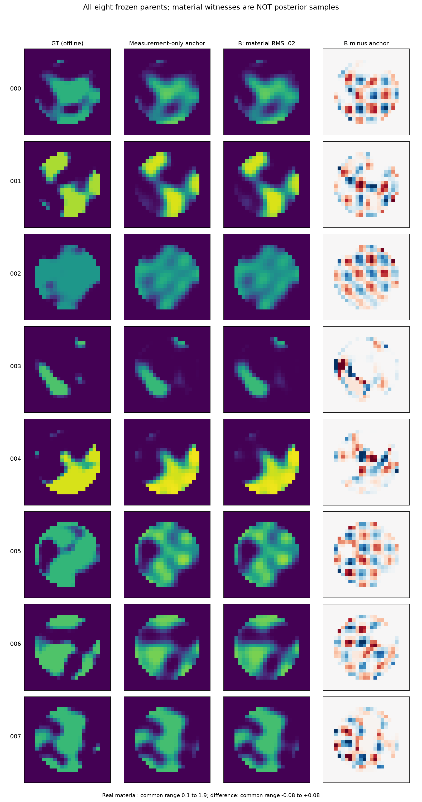
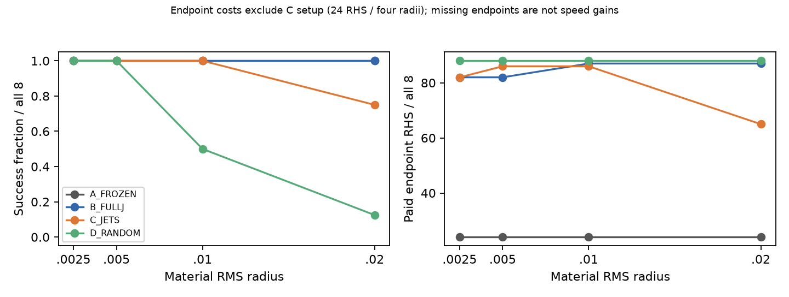
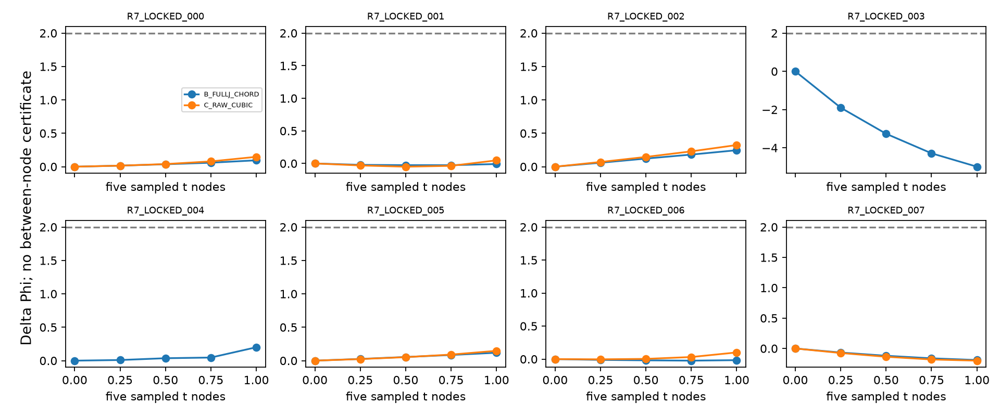

E2：完整非线性Maxwell有限材料实验
四个DEV为已暴露R6物理中心，八个新locked只由观测从zero进行Gaussianized direct-Probit64重建。原prior、sigma、TM24、8×32复通道不变。E0/E1新增RHS=0；整个R7支付37,456 RHS。两个locked anchor触及严格状态cap，保留非驻点/失败状态；几何研究不以MAP驻点为必要条件。
0.02 RMS主结果
成功同时要求原decoder合法、材料距离误差≤2%、signed progress≥一半、原noise-ball、DeltaPhi≤2。合理prior增量≤10为另列启发式，所有成功例也满足。
| 路线 | 竞争成功/8 | 另满足pair距离≤1/8 | 说明 |
|---|---|---|---|
| A Frozen | 8 | 6 | 冻结J仍很强，不能省略这个简单基线。 |
| B Dynamic Full-J | 8 | 7 | 普通材料有效坐标GN与原decoder回缩。 |
| C Maxwell jets2/3+同正确器 | 6 | 6 | 003/004的局部多项式路径不能在latent半径4内到达.02，计失败，不缩小距离补齐。 |
| D Matched Random+同正确器 | 1 | 0 | 原先会放大近null坐标的随机实现已在DEV修正；本表为冻结后的强控制。 |
B的pair范围约.173–1.121。003虽然DeltaPhi=−4.987且竞争，却不满足pair≤1；两种门不能混同。8个点的pair关系更不构成严格等价关系。
两种小距离.0025/.005所有四臂都8/8成功；.01时随机仅4/8，其他8/8。全部128个方法/距离状态和未选试探均保留。没有GT在线选样本或停机。
C是否超过B？
两者在.02均有端点的n=6，C−B的Phi均值−.01154，parent配对描述95%区间[−.06022,.02133]。端点RHS相同，C另支付24 RHS setup/方向；四距离摊销后每个端点另6 RHS，冷单端点另24 RHS。不能因C有两例没跑端点而称它更快。
全8成功率差−.25，描述区间[−.625,0]。只有8个parent，不作总体优势/劣势的高精度统计；就冻结的竞争门与完整费用，未建立高阶独立收益，GO_HIGHER_ORDER=NO_GO。这个结论不是对所有高阶方法的数学否定。
两个DEV另给普通Full-J最多20态的参考；实际分别272/304 RHS，包括恢复中心。它们仍是budgeted profile，不宣称严格收敛。原始几何候选及本轮C的没有收益不归因于“Maxwell无解”。
路径资格
B的8条anchor到.02端点参数弦，在t=0/.25/.5/.75/1的五节点全部过noise-ball和竞争门；C的6条可用原始cubic路径五节点也过门，另2条不可用。这里只能称sampled-path-qualified。C的有限预测相对误差在六个端点约.86%–4.73%，但全部跨seam，且c1非零：不是精确cubic物理纤维。



完整逐对象表见audit/results/ENDPOINTS.csv、SUMMARY.csv与E2各parent的RESULT.json；原始latent/material/prediction/current/field/J在Release无损证据内。Full66后验、模式质量、连续exact fiber均未认证。